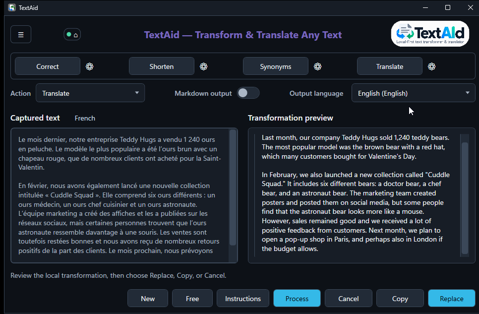

Summarize
Get to the point
Turn a long passage into a shorter account of its main ideas.
TextAid can work on a selected passage or on text you enter directly. The same review window keeps you in control of the result.
Fix language, make a passage shorter or clearer, expand a draft, simplify it, change its tone, or make it sound more natural. Choose the action that fits the task.
Try your first action
The quick Translate shortcut starts automatically with a destination chosen from your language preferences. You can change that destination and run the translation again.
See quick Translate
TextAid includes actions for summarizing, answering email, finding synonyms, and more. Four presets put frequent actions one click away; you can create and edit actions too.
Turn a long passage into a shorter account of its main ideas.
Use Free mode to enter a request directly when you have no text selected.
Choose the prompt, model profile, output language, and optional question shown to the user.
The code is publicly available on GitHub. Ready-to-run Windows builds are published on the releases page.
Free for non-commercial use. Commercial use requires prior written permission. Read the full license.